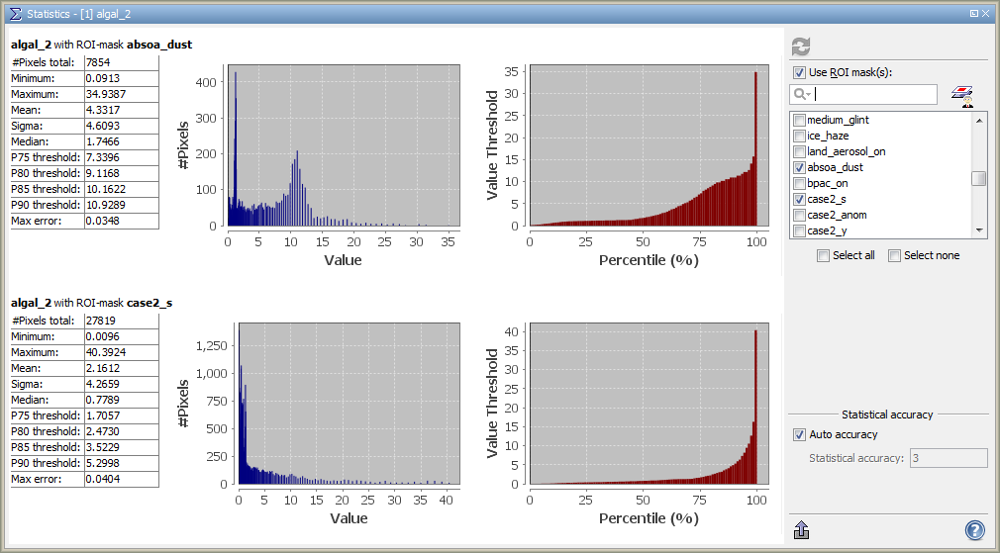

| Statistics | |
This dialog, opened via  , displays statistical information about the currently
selected band. See the screenshot for an example.
, displays statistical information about the currently
selected band. See the screenshot for an example.
The set of statistical information displayed comprises:
Additionally, two diagrams are displayed: the left one is a histogram, the right one shows the thresholds for all
percentiles.
The statistics can be computed for a whole band, or the considered pixels can be restricted to those matching a
single or multiple ROI masks. The list of masks can be narrowed down by typing a pattern into the text field. For
convenience, there is also the  -icon which allows the user to open the
Mask Manager tool window.
-icon which allows the user to open the
Mask Manager tool window.
Note: A mouse right-click within the statistics tables brings up a context menu with the item Copy data to clipboard. This will copy the diagram data as tabulated text to the system clipboard. The copied text can then be pasted directly into a spreadsheet application (e.g. Microsoft® Excel).